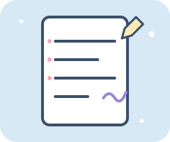
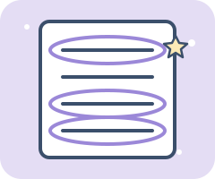
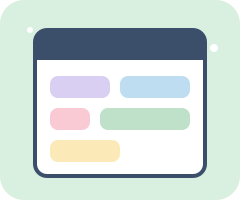
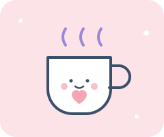
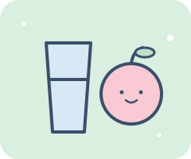
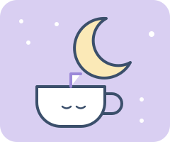
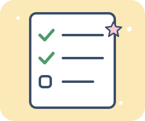

8 steps to get through a rough week
Take these one at a time. You do not need to be perfect. You just need a gentle plan and a little kindness toward yourself.
-
Step 1
Write it all down
Write out all the work you have, or everything that is stressing you out, on paper. Getting it out of your head makes it smaller and easier to see.

-
Step 2
Circle your top 3
Circle the 3 things you actually have to complete this week. Organize your projects by how much time and effort each one needs.

-
Step 3
Block out your time
Designate time on your calendar to complete those 3 things. If you can, include breaks between work blocks.

-
Step 4
Organize what you can control
Before you start working, get everything you can control in order. Use different tabs for different tasks, and write outlines of what you need to do and how to do it.
-
Step 5
Schedule something to look forward to
Plan something you are excited about, like getting coffee or food with a friend, going on a walk, or watching your favorite show before bed.

-
Step 6
Take real breaks
Move around, eat food, and drink water throughout the week. Food and water are fuel, and they give you energy. Even walking around your room or apartment helps you stay motivated and less fidgety after sitting at a desk.

-
Step 7
Keep a consistent night routine
A steady routine helps you feel grounded and in control, even when everything else is stressful. Small things count: washing your face, showering, eating a good dinner, drinking tea before bed, and turning your lights off.

-
Step 8
Review your day before tomorrow
Write down what you got done today and what you still need to work on tomorrow. It reminds you what is next and lets you feel accomplished as you cross tasks off.

You've got this
Want to know who made this guide? Meet the team or return to the homepage.